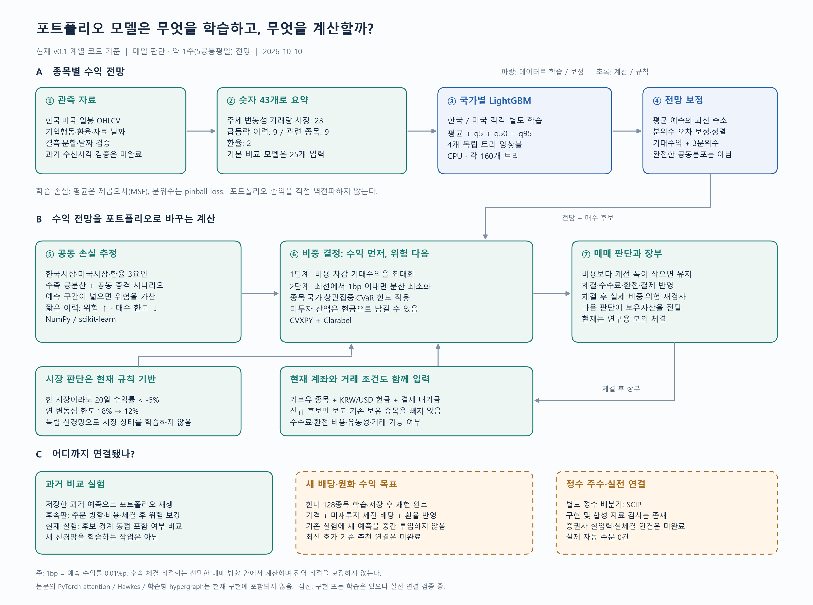

종목·날짜마다 입력 43개
추세·변동성·거래량·시장 상황 23개에 급등락 이력 9개, 관련 종목의 상황 9개, 환율 2개를 더합니다. 관련 종목은 최근 함께 움직였던 집단의 통계로 표현합니다.
NumPy / pandas / SciPy. 기본 비교 모델은 25개 입력. attention이나 학습형 그래프 층은 없습니다.
종목별 수익을 LightGBM으로 예측하고, 보유자산·위험·거래비용을 함께 넣어 투자 비중을 수학적으로 계산합니다. 매일 판단하지만 매일 반드시 거래하지는 않습니다.
파란색은 학습·보정, 초록색은 계산·규칙, 주황색 점선은 실전 연결이 남은 부분입니다.

추세·변동성·거래량·시장 상황 23개에 급등락 이력 9개, 관련 종목의 상황 9개, 환율 2개를 더합니다. 관련 종목은 최근 함께 움직였던 집단의 통계로 표현합니다.
NumPy / pandas / SciPy. 기본 비교 모델은 25개 입력. attention이나 학습형 그래프 층은 없습니다.
한국·미국을 따로 학습합니다. 각 국가에서 평균 수익률과 5%·50%·95% 분위수를 각각 예측합니다. 하위 5% 분위수는 최악 손실 한도가 아니며, 세 분위수가 완전한 공동분포를 뜻하지도 않습니다.
독립 LightGBM 4개 / 국가. 예측기당 트리 160개 설정. 평균: MSE, 분위수: pinball loss.
학습 뒤쪽의 별도 과거 구간으로 예측 편향을 보정합니다. 한국시장·미국시장·환율이라는 공통 요인으로 함께 떨어지는 위험을 추정합니다. 이력이 짧으면 위험을 더 크게 보고 매수 한도를 낮춥니다.
평균 축소·분위수 보정 / 수축 공분산 / 공동 충격 시나리오. 시장 상태는 현재 규칙으로 판단합니다.
기보유 종목, 원화·달러 현금, 결제 대기금, 수수료·환전 비용을 함께 고려합니다. 변경 이득이 작으면 유지하고, 체결 후에는 실제 비중과 위험을 다시 계산합니다.
연속 비중: CVXPY + Clarabel. 별도 정수 주수 배분: SCIP. 증권사 실체결 연결은 미완료.
예측기의 학습 손실과 투자 비중의 목표함수는 분리돼 있습니다. 포트폴리오의 최종 손익을 예측기에 직접 역전파하는 구조는 아닙니다. 후속 체결 최적화는 선택한 매매 방향 안에서 계산하므로 모든 가능한 주문 조합의 전역 최적을 보장하지 않습니다.
매일 약 1주 뒤(5개 공통 평일)의 수익 전망을 갱신해 현재 보유 상태를 다시 평가합니다. 매일 전량 매도·재매수하거나, 반드시 5일만 보유하는 방식은 아닙니다. 국가별 휴장일과 실제 체결 시점은 별도 처리해야 합니다.
현재는 아닙니다. 예측과 위험·현금 제약을 받아 최적화기가 투자 비중을 정하고 잔액은 현금으로 남깁니다. 시장 위험 한도도 규칙 기반입니다. 한 시장의 최근 20일 수익률이 -5% 아래이면 연 변동성 허용치를 18%에서 12%로 낮춥니다.
| 구성 | 참고 논문 | 현재 구현 |
|---|---|---|
| 시간 패턴 | Self-attention으로 학습 | 기간별 지표로 요약 |
| 급격한 움직임 | Hawkes 강도 함수를 신경망으로 학습 | 급등락 발생 이력 계산 |
| 종목 간 관계 | 사전·동적 하이퍼그래프 신경망 | 최근 상관 집단의 통계 계산 |
| 수익 예측 | 신경망·MLP / PyTorch | 트리 앙상블 / LightGBM |
| 포트폴리오 실험 | 예측 상위 종목 매매 | 보유자산·비용·공동 위험을 포함한 별도 비중 최적화 |
논문의 급등락·종목 간 관계라는 아이디어 일부를 반영했습니다. 해당 신경망 자체를 재현하거나 현재 모델보다 우수한지 같은 조건에서 비교한 상태는 아닙니다.
참고: Park, Hong & Jeon (2025), Dynamic Higher-Order Relations and Event-Driven Temporal Modeling for Stock Price Forecasting, Figure 2·Sections 4–5.
2026.10.11 검증 · 같은 1년·종목군·5일 수익 목표 · 4개 분기 × 2개 국가 재학습
기존 한국 실험 228일 중 180일에서 학습 입력인 시장 변동성 특징값이 0으로 기록됐습니다. 200일 이동평균을 계산할 수 있는 종목이 하나도 남지 않았을 때 시장 집계를 0으로 처리한 영향입니다. 실제 시장 안정성을 측정한 값으로 해석할 수 없습니다.
최근 구간의 90% 이상이 관측돼야 이동 통계를 계산합니다. 거래량 0은 알려진 거래대금 0으로 유지하고, 누락 가격·수익률은 채우지 않습니다. 시장 추세는 확인 가능한 시작·종료 가격에서 계산합니다.
한국 예측 가능일은 228일에서 241일로 늘었습니다. 기존 30,157행은 모두 유지됐고 790행이 추가됐습니다. 추가 표본은 공통 표본의 성능 개선 계산에 섞지 않았습니다.
| 시장·입력 | 기존 RMSE | 수정 RMSE | 기존 90% 포함률 | 수정 90% 포함률 |
|---|---|---|---|---|
| 한국 · 기본 25개 | 13.0996 | 13.0800 | 87.02% | 86.55% |
| 미국 · 기본 25개 | 8.3345 | 8.3460 | 87.82% | 87.66% |
| 한국 · 확장 43개 | 13.1003 | 13.1007 | 85.53% | 86.67% |
| 미국 · 확장 43개 | 8.3541 | 8.3628 | 88.29% | 88.33% |
평균오차 차이에 대해 5일·20일 묶음으로 각각 2,000회 재표집했습니다. 8개 구간 중 8개가 차이 0을 포함합니다. 자료 처리 수정만으로 안정적인 예측 우위를 확보했다고 결론내리지 않습니다. 이 표는 투자 수익률이 아닙니다.
추가 790행 중 실현값 787행을 평가했고 3행은 미확정입니다. 기존 모델에 같은 표본의 예측이 없으므로 아래 결과를 개선 폭으로 해석하지 않습니다.
| 입력 | RMSE (%p) | 평균 편향 (%p) | 90% 포함률 |
|---|---|---|---|
| 기본 25개 | 9.6680 | -4.567 | 83.26% |
| 확장 43개 | 9.6895 | -4.571 | 86.30% |
첫 시도에서는 거래량 0을 누락으로 취급해 거래 재개 종목의 17행을 제외하는 문제가 있었습니다. 그 결과를 보존한 뒤 알려진 0을 유지하도록 고쳤습니다. 90% 관측률과 모델 설정은 바꾸지 않았고, 최종 비교에서는 기존 행이 빠지지 않습니다.
수정 버전에서도 한국 시장 추세를 계산할 수 없는 1일은 미확정으로 남겼습니다. 그날의 평균 보정에는 방향을 가정하지 않는 0 사전값을 썼으며 실제 관측값 0으로 바꾸지 않았습니다. 16개 저장 모델의 예측과 공통 표본 점수도 별도 계산으로 대조했습니다.
두 모형 모두 종목 순위를 계산할 수 있는 같은 날짜만 비교했습니다. 한국 기본 모형은 공통 날짜가 0일이므로 순위 개선을 비교할 수 없습니다. 이를 상관 0으로 채우지 않습니다.
| 시장·입력 | 순위 공통일 / 전체 공통일 | 기존 순위상관 | 수정 순위상관 |
|---|---|---|---|
| 한국 · 기본 25개 | 0 / 228 | 비교 불가 | 비교 불가 |
| 미국 · 기본 25개 | 251 / 251 | 0.0675 | 0.0554 |
| 한국 · 확장 43개 | 108 / 228 | -0.0504 | -0.0527 |
| 미국 · 확장 43개 | 190 / 251 | 0.0645 | 0.0716 |
추가로 수정 모형의 전체 30,947행에서 수익을 항상 0으로 예상하는 방식, 시장 추세 사전값과 평균 예측 오차를 비교했습니다. 결과가 있는 30,917행을 날짜별 동일 가중으로 평가한 탐색적 비교이며, 위의 기존·수정 공통 표본 비교와 분모가 다릅니다.
| 시장 | 평균 예측 방식 | RMSE (%p) |
|---|---|---|
| 한국 | 항상 수익 0 예상 | 13.0198 |
| 미국 | 항상 수익 0 예상 | 8.3467 |
| 한국 | 단순 시장 사전값 | 12.9522 |
| 미국 | 단순 시장 사전값 | 8.3343 |
| 한국 | 수정 기본 25개 | 12.9189 |
| 미국 | 수정 기본 25개 | 8.3460 |
| 한국 | 수정 확장 43개 | 12.9396 |
| 미국 | 수정 확장 43개 | 8.3628 |
원자료의 2025-09-19 공백, 과거 종목 구성·자료 공개 시각 문제는 남아 있습니다. 이미 본 기간의 처리 방식 비교이므로 독립 검증이 아닙니다. 현재 가격을 이용한 추천·실제 주수의 체결·비용 차감 계좌 성과는 별도로 검증해야 합니다.
2026.10.11 확인 · 평가 기간 2025.10.01–2026.09.30 · 4개 분기 × 2개 국가
기본 25개 입력보다 평균 수익 예측 오차가 양국 모두 줄지 않았습니다. 한국에서는 하방 예측과 구간 정확도도 나빠졌습니다. 이 결과는 예측 정확도 비교이며 포트폴리오 투자 수익률이 아닙니다.
분기 시작 전에 결과가 확정된 자료만 학습·보정에 사용하고, 그 뒤 분기의 예측을 평가했습니다. 30,157개 종목·날짜 중 결과가 있는 30,130개를 채점했습니다. 한국 27개 결과 누락을 기록했고, 같은 날짜·종목에서 두 모델을 비교했습니다.
2025년 9월 19일 Yahoo 자료에서 한국 64종목의 가격·거래량이 모두 비어 있었습니다. 이 누락이 20일 평균 거래대금 계산에 전파돼, 2025년 10월 1~24일 중 예측 기준일 13일에는 당시 가격이 있는 한국 종목도 후보에서 전부 빠졌습니다. 자료 누락에 따른 제외 819건을 확인했습니다. 시장을 피하겠다는 모델의 판단으로 해석할 수 없습니다.
같은 공급처에 64종목을 다시 요청했지만 유효한 누락일 자료는 복구되지 않았습니다. 별도 보관 자료에는 그날 63종목의 거래가 있으나, 공급처 간 가격 기준을 확인하지 않은 채 합치지는 않았습니다.
아래 점수는 예측이 남아 있는 날짜·종목에 한정한 기존 결과입니다. 누락 기간까지 포함한 완전한 운용 성과를 뜻하지 않습니다. 후속 100만원 적립식 매매 검증에는 이 자료 공백을 해결하거나 그 영향을 별도로 반영해야 합니다.
별도로 두 모델의 평가 가능한 목표 수익률 30,130개씩을 당시 주가 단위·배당·환율로 다시 계산해 일치함을 확인했습니다. 이는 계산 기준 검산이며 예측력 향상이나 실제 주문 가능성의 증명이 아닙니다. 기존 투자 성과 수치는 변경하지 않았습니다.
| 시장 | 입력 | RMSE (%p) | 평균 편향 (%p) | 90% 구간 포함률 | 하방 5% 이하 발생률 |
|---|---|---|---|---|---|
| 한국 | 기본 25개 | 13.0996 | -0.9505 | 87.02% | 6.76% |
| 한국 | 확장 43개 | 13.1003 | -1.0953 | 85.53% | 7.96% |
| 미국 | 기본 25개 | 8.3345 | +0.0456 | 87.82% | 6.67% |
| 미국 | 확장 43개 | 8.3541 | +0.0692 | 88.29% | 6.47% |
RMSE는 수익률 오차의 크기로 낮을수록 좋습니다. 편향은 예측−실현이며 음수는 수익을 낮게 예상했다는 뜻입니다. 포함률 목표는 90%, 하방 발생률 목표는 5%입니다. 표의 %p는 약 1주 수익률의 오차 단위입니다.
한국 228일 중 기본 모델은 167일, 확장 모델은 62일에 보정 후 종목별 기대수익이 모두 같은 값이 됐습니다. 따라서 순위상관은 두 모델 모두 순위를 계산할 수 있는 같은 날짜끼리 비교해야 합니다.
| 시장 | 공통 날짜 | 기본 순위상관 | 확장 순위상관 |
|---|---|---|---|
| 한국 | 61일 | -0.1050 | -0.1018 |
| 미국 | 251일 | 0.0675 | 0.0617 |
한국의 보정 전 순위상관도 기본 −0.0148, 확장 +0.0005 수준이었습니다. 보정을 없애는 것만으로 유효한 초과수익 신호가 생긴다고 결론낼 수 없습니다.
| 분기 시작 | 시장 | 입력 | 결과 있는 행 | RMSE (%p) | 평균 편향 (%p) |
|---|---|---|---|---|---|
| 2025-10-01 | 한국 | 기본 | 2,830 | 9.0994 | -0.7664 |
| 2025-10-01 | 미국 | 기본 | 3,951 | 6.7399 | -0.1553 |
| 2025-10-01 | 한국 | 확장 | 2,830 | 9.0809 | -0.5423 |
| 2025-10-01 | 미국 | 확장 | 3,951 | 6.7849 | +0.2422 |
| 2026-01-01 | 한국 | 기본 | 3,647 | 12.6360 | -2.7183 |
| 2026-01-01 | 미국 | 기본 | 3,812 | 7.1029 | +0.1946 |
| 2026-01-01 | 한국 | 확장 | 3,647 | 12.5898 | -2.5892 |
| 2026-01-01 | 미국 | 확장 | 3,812 | 7.1159 | -0.1576 |
| 2026-04-01 | 한국 | 기본 | 3,870 | 16.1818 | -0.5975 |
| 2026-04-01 | 미국 | 기본 | 3,968 | 9.4304 | -2.1338 |
| 2026-04-01 | 한국 | 확장 | 3,870 | 16.2263 | -1.4342 |
| 2026-04-01 | 미국 | 확장 | 3,968 | 9.4412 | -2.0238 |
| 2026-07-01 | 한국 | 기본 | 3,956 | 12.6995 | +0.2165 |
| 2026-07-01 | 미국 | 기본 | 4,096 | 9.6314 | +2.2159 |
| 2026-07-01 | 한국 | 확장 | 3,956 | 12.6995 | +0.2165 |
| 2026-07-01 | 미국 | 확장 | 4,096 | 9.6470 | +2.1401 |
종목군은 2026년 10월 8일에 선정했으므로 과거 종목 구성·생존 편향이 남습니다. 예측은 현재 소급 재구성했으며 과거 실제 발행 신호가 아닙니다. 공급처의 과거 공개 시각·정정 이력과 한국 가격 차이 59건도 해결하지 못했습니다.
세전 배당 수취권과 참고 환율을 포함한 수익 목표를 사용했습니다. 거래비용·세금·체결을 거친 계좌 수익은 별도 검증이 필요합니다. 독립 투자 검증이나 통계적 유의성을 입증한 결과로 해석하지 않습니다.
8개 국가·분기의 저장 모델을 다시 불러온 예측 차이와 별도 점수 검산 차이는 모두 0이었습니다. 재현 가능하다는 사실과 예측 성능이 충분하다는 판단은 구분합니다. 새 모델은 채택하지 않았으며 현재 가격 기준 추천 연결도 검증 중입니다.
새 학습 목표는 분할 기준을 맞춘 주식 가치와 재투자하지 않은 세전 배당 수취권을 합해 원화로 평가합니다. 유효 목표 123,151개를 원자료의 주수·현금·환율로 독립 재계산했고 허용 오차 초과 불일치는 0개였습니다. 배당 포함 4,392개, 분할 구간 78개가 포함됩니다.
이 검사는 산술 일관성 확인입니다. 예측 성능이나 투자 성과 평가가 아닙니다. 자료 종료일은 10월 8일, 예측 기준일은 10월 9일이지만 실제 생성일은 10월 10일입니다. 이를 10월 9일에 미리 알았던 예측으로 사용하지 않습니다.
한국 64종목 중 59종목의 공급처별 가격 차이, 과거 자료 공개 시각·당시 종목 구성, 최신 호가 기준 예측, 실제 배당 입금·세금·증권사 계좌 연결이 남아 있습니다. 매일 텔레그램 매매안과 실제 자동매매는 활성화하지 않았습니다.
공개한 것은 집계와 검증 근거입니다. 원시 가격·계좌 정보·모델 파일은 포함하지 않습니다.
| 근거 | SHA-256 |
|---|---|
| portfolio-market-state-20261010-v1 | 298b7eb5bdd5eb694d582c3588d9de776e3bad392ec2c03222eb277520699b0f |
| portfolio-wealth-training-20261010-v4 | 5fa4b58c5bb3e06df639594e4160d92b05f36f1d478b10eb80a2aafb15e47672 |
| portfolio-wealth-model-20261010-v2 | 6388ecce9c2ae162b221a43ba2e07407962f798686b78317e646ba866b094c92 |
| portfolio-wealth-target-audit-20261010-v1 | e82d6a1c14c5767231240001a111bb17c543eb197a0ef7ff520773776175218c |
| portfolio-wealth-forecast-evaluation-20261011-v2 | 9e5544e81eb9ce90eb3dfd0be156edaa1ff35eb54289348c0081a9ad00fad5ab |
| portfolio-wealth-forecast-review-20261011-v1 | fce08a61500bdc201cde9384edaa514b1401446b85d8513fe5ec8643949650b6 |
| portfolio-historical-bridge-20261011-v1 | 19e0e5c2c2ccae0e4432446be830ef89a48fab99a61de86c88962acecd9b91bf |
| portfolio-forecast-availability-20261011-v1 | 4bc36a46c92fb0e1926090197b92c6ac95515a632441cc4f48dcdc5481efce97 |
| portfolio-history-gap-20261011-v1 | d10bc109098aad773c8e80e9947df898e6371a5c9d81ca1d5bbeb0bf2fbbb654 |
| portfolio-market-context-audit-20261011-v1 | 5228b83c2ba145fbb21faf78933f517a8218b20d57e7d3c06321cd7aad9eee43 |
| portfolio-missing-training-20261011-v2 | 8f0fec1242631a06fe1437254850bc70315fae222d09328bc646253b614f68bd |
| portfolio-missing-forecast-20261011-v2 | d38ec02d9d44ba4a93c0beec4bceb77a5721b4b2da07de17a5500892ff4fb7d5 |
| portfolio-missing-comparison-20261011-v2 | 567917ee93bba31a012a4f2c438f7df1bfc66ff231f6cceeadfd13671863ca98 |
| portfolio-missing-review-20261011-v2 | 79774957cd63722b87e0c556d55e6b25e1ba12c39c31eed2e9e4cf8f630e7112 |
| portfolio-whole-wealth-inputs-20261011-v1 | aae4440a18f2e5064cda6b70bc330933ec6dec9adb12b8c852a1eb8f8c530012 |
| portfolio-whole-wealth-baseline-50000-20261011-v1 | 7482e4736c56a5d8950ea621dba7461d3ac0ea59ceec8e2751e35821977de264 |
| portfolio-whole-wealth-baseline-5000-20261011-v1 | adaad4b8a5291e756cb0768deb88da41a2b7e34f570a5db29e497b4d684d5e22 |
| portfolio-whole-wealth-baseline-50000-review-20261011-v1 | 6f7760167cc9b220e86384ff8959ca6485290792d893a3fe2bf93d15a0115a54 |
| portfolio-whole-wealth-baseline-5000-review-20261011-v1 | dd84ed11339b2041450c66e40f53a4d1700c70398fd5419cc72e4188cba84604 |
| portfolio-whole-wealth-postfill-diagnosis-20261011-v1 | fa45179c4aea3fba527826cb18db522f741c49495e96c101710775df4413df84 |
| portfolio-whole-wealth-corporate-evidence-20261011-v1 | 0f7668e88d7b42fa6428725775bfb5692967d1184afd02781e7f82c6c2f99471 |
| portfolio-whole-wealth-held-action-review-20261011-v1 | d8739d6a87524e7f69032a1e3772a69b1381c2c6482f9f21ef1e79d8071b5b69 |
| portfolio-whole-wealth-held-action-diagnosis-20261011-v1 | 1f4393e28ffc7985c9748b5e196d35d8b4fc046fa0a98e15382defcc68f8d01c |
| portfolio-whole-wealth-action-catalog-20261011-v1 | 6aa45391d5789593f5eb146639dc112bba3300d5ea419726fd315555a883b7fe |
| portfolio-whole-wealth-exact-fee-review-20261011-v1 | c46b94a0a06cc47dc5701da82fc81c13041d93b28172e47ca4e3e951faf23189 |
| portfolio-whole-wealth-fee-prefix-audit-20261011-v2 | ffa57fd89091815f1631edaa0c277f413f918d6d25ab04da223d483f853a55b8 |
| portfolio-whole-wealth-prior-5000-20261011-v2 | 08c4625e7c68663e42e6c7e13f41f889faf0534a8ba821f59cc427d01a293192 |
| portfolio-whole-wealth-prior-5000-review-20261011-v2 | 2253280b0e129cd908c485329b14cf950e72e31c36e9b8a7ef97a5fefb086d4d |
| portfolio-whole-wealth-prior-performance-20261011-v1 | 0fd7a3f125074ed31335c59806476b0145832b7deec2c9794221a2f1fc4dad00 |
| portfolio-whole-wealth-prior-postfill-20261011-v1 | dd10660d4958d7f12f01ea2a76370e69c32f9578267d3abe80fc68ae068f6e2e |
| portfolio-whole-wealth-primary-contrast-20261011-v1 | 6ad131607c5b90ccdfedc0e1eb17de841f9dfd38016a7f821a34dc7e5449682b |
| portfolio-whole-wealth-comparison-plan-20261011-v1 | b26c078f52063528f3c76d3112b7412cfd44f0826636bdebca5e80f73871de26 |
| portfolio-whole-wealth-combined-50000-20261011-v3 | 35daa394006c795e4b97b48dc3e19b28c69cc51912a8237701490ddb88cad5b0 |
| portfolio-whole-wealth-combined-50000-review-20261011-v3 | e80fd296b86cf4b254e0a8bd8b6892152bf1ade47b639b03d4b177d2170c4544 |
| portfolio-whole-wealth-combined-50000-performance-20261011-v1 | b9c6fc222e341d78001ce4ac302278429720679b3353e568787105254dd88211 |
| portfolio-whole-wealth-combined-50000-risk-review-20261011-v1 | d2bd626908cc007ede2ab05a7e2b5746452ebd259f3b121e076e97862053a7ee |
| portfolio-whole-wealth-baseline-50000-20261011-v3 | c585de95adbef39d8f30db93727b5f83dbcd4c96afcc4551d4443c9ad0497041 |
| portfolio-whole-wealth-baseline-50000-review-20261011-v3 | 552c39167f36f43e51b217f21bb5548ccbd94aaf8dcaf4a6bef313094c90ec0e |
| portfolio-whole-wealth-baseline-50000-performance-20261011-v1 | daab5759a4bc1bfa72387e4955781f843f8accdb0407c14cce6af79f2eca604e |
| portfolio-whole-wealth-baseline-50000-risk-review-20261011-v1 | d15ec05e5e74e4f69c1bdcc0e0de612c042b6510d7afbd1fc7ca53ea82d71bc4 |
| portfolio-whole-wealth-comparison-20261011-v1 | 4850375a61df16597951dc4a24c04c2cc7232d1c85519a8612c58f60e552da47 |
| portfolio-whole-wealth-cash-20261011-v1 | bcd13570a450def70600fd2e362ef55c284f76f86c8ef872b8039c2ed5ed78fa |
| portfolio-whole-wealth-cash-review-20261011-v1 | ee1af66584953201324843aead9c4166f4c3cf433e3a80815a14b25faab5e128 |
| portfolio-whole-wealth-cash-performance-20261011-v1 | 515f44d3c05b3fdbdb1f9483b002098f1a47ff5ddb60cc1010b303b4d9676ccf |
| portfolio-whole-wealth-cash-risk-review-20261011-v1 | efd326fd376add52b9366d0a201599e2fdebb9a77537a02bd4e3df6ec1d8a183 |
| portfolio-whole-wealth-baseline-5000-20261011-v3 | 2c8ca21e3c6467026b6817386d9e515fd588cf0d20caa0a8fd721a671735468f |
| portfolio-whole-wealth-baseline-5000-review-20261011-v3 | e2759d468ca2c885c183e948495faae09ed8eddfb09c8e8280a2ec8885b78676 |
| portfolio-whole-wealth-baseline-5000-performance-20261011-v1 | 6074bb9f82af731313d23efbd620877f1ef4f4259c0bc394bc4ae8b4d08d0c77 |
| portfolio-whole-wealth-baseline-5000-risk-review-20261011-v1 | 542c0f5ab5d39eb1eb261014cf7c00d5f89669f984be74bd16f336d659c68348 |
| portfolio-whole-wealth-combined-5000-20261011-v3 | 59d7845f70d5f2be54a4f9da057c3fc1282a088e5f4aba31e920feaa8bb302fc |
| portfolio-whole-wealth-combined-5000-review-20261011-v3 | 551349214a234cc0a1d437977acc41fb5abb0e3b84ea433e4226a581083bbf4e |
| portfolio-whole-wealth-combined-5000-performance-20261011-v1 | 9d16585fd1ac2b3f7565e36d378baa9491249c69fa68f7c1c122024b42f7f4d0 |
| portfolio-whole-wealth-combined-5000-risk-review-20261011-v1 | 9c3e75b846fdcbd41dbfc4a8c36e074883fd3eca197d8bfa22fdf4acc5243afe |
| portfolio-whole-wealth-prior-risk-review-20261011-v1 | 4e190fc181ce817cc73d144d7919fb976ba89a499fa7e94ac2bde43fcc2b777a |